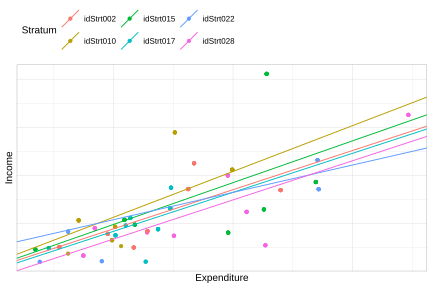
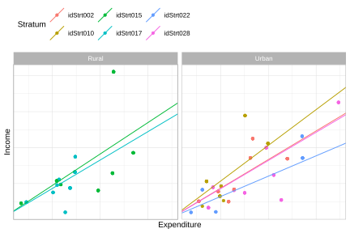

8.6 Modelo con intercepto y pendiente aleatoria
El modelo con intercepto y pendiente aleatoria permite que tanto el nivel medio del ingreso como el efecto del gasto varíen entre estratos:
\[ Ingreso_{ij} = \beta_{0j} + \beta_{1j} Gasto_{ij} + \epsilon_{ij} \]
con:
\[ \beta_{0j} = \gamma_{00} + \gamma_{01} Stratum_j + \tau_{0j} \]
\[ \beta_{1j} = \gamma_{10} + \gamma_{11} Stratum_j + \tau_{1j} \]
El ajuste en R es:
mod_Pen_Aleatorio <- lmer(Income ~ Expenditure + (1 + Expenditure | Stratum),
data = encuesta, weights = wk2)
performance::icc(mod_Pen_Aleatorio)## # Intraclass Correlation Coefficient
##
## Adjusted ICC: 0.702
## Unadjusted ICC: 0.465Los coeficientes del modelo por estrato se presentan en la Tabla 8.7:
| (Intercept) | Expenditure | |
|---|---|---|
| idStrt001 | -235.55 | 2.787 |
| idStrt002 | 29.56 | 1.628 |
| idStrt003 | 152.40 | 1.162 |
| idStrt004 | 225.09 | 1.353 |
| idStrt005 | -93.09 | 1.291 |
| idStrt006 | 32.90 | 1.203 |
| idStrt007 | 39.99 | 1.076 |
| idStrt008 | 168.60 | 0.902 |
| idStrt009 | 31.62 | 0.757 |
| idStrt010 | 70.46 | 1.905 |
La Figura 8.9 presenta las rectas estimadas por estrato:
Coef_Estimado <- inner_join(
coef(mod_Pen_Aleatorio)$Stratum %>% tibble::rownames_to_column(var = "Stratum"),
encuesta_plot %>% dplyr::select(Stratum) %>% distinct()
)ggplot(data = encuesta_plot,
aes(y = Income, x = Expenditure, colour = Stratum)) +
geom_jitter() +
geom_abline(data = Coef_Estimado,
mapping = aes(slope = Expenditure,
intercept = `(Intercept)`,
colour = Stratum)) +
theme(legend.position = "none",
plot.title = element_text(hjust = 0.5)) +
theme_cepal()
Figura 8.9: Rectas de regresión estimadas por estrato: modelo con intercepto y pendiente aleatoria
Las predicciones de este modelo se recogen en la Tabla 8.8:
tab_pred <- data.frame( Predicción = predict(mod_Pen_Aleatorio),
Ingreso = encuesta$Income,
Estrato = encuesta$Stratum
) %>% distinct() %>% slice(1:6L)| Predicción | Ingreso | Estrato | |
|---|---|---|---|
| 1 | 729.788 | 409.87 | idStrt001 |
| 6 | 857.723 | 823.75 | idStrt001 |
| 10 | -29.100 | 90.92 | idStrt001 |
| 13 | -2.008 | 135.33 | idStrt001 |
| 18 | 489.637 | 336.19 | idStrt001 |
| 22 | 1254.043 | 1539.75 | idStrt001 |
La Figura 8.10 muestra que la calidad predictiva mejora respecto a los modelos anteriores:
ggplot(data = tab_pred,
aes(x = Predicción, y = Ingreso, colour = Estrato)) +
geom_point() +
geom_abline(intercept = 0, slope = 1, colour = "red") +
theme_bw() +
theme(legend.position = "none")
Figura 8.10: Predicciones del modelo con intercepto y pendiente aleatoria versus ingreso observado. La línea roja indica ajuste perfecto.
8.6.1 Extensión con variable zona
Para enriquecer el modelo, se incorpora la variable zona como predictor adicional, junto con la media del gasto por estrato (\(\mu_j\)) como covariable contextual:
\[ Ingreso_{ij} = \beta_{0j} + \beta_{1j} Gasto_{ij} + \beta_{2j} Zona_{ij} + \epsilon_{ij} \]
donde:
\[ \beta_{0j} = \gamma_{00} + \gamma_{01} Stratum_j + \gamma_{02} \mu_j + \tau_{0j} \]
\[ \beta_{1j} = \gamma_{10} + \gamma_{11} Stratum_j + \gamma_{12} \mu_j + \tau_{1j} \]
\[ \beta_{2j} = \gamma_{20} + \gamma_{21} Stratum_j + \gamma_{22} \mu_j + \tau_{2j} \]
donde \(\mu_j\) es el gasto medio de los hogares en el estrato \(j\).
media_estrato <- encuesta %>%
group_by(Stratum) %>%
summarise(mu = mean(Expenditure))
encuesta <- inner_join(encuesta, media_estrato, by = "Stratum")
mod_Pen_Aleatorio2 <- lmer(
Income ~ 1 + Expenditure + Zone + mu + (1 + Expenditure + Zone + mu | Stratum),
data = encuesta, weights = wk2
)Las predicciones del modelo se presentan en la Tabla 8.9:
tab_pred <- data.frame( Predicción = predict(mod_Pen_Aleatorio2),
Ingreso = encuesta$Income,
Estrato = encuesta$Stratum
) %>% distinct() %>% slice(1:6L)| Predicción | Ingreso | Estrato | |
|---|---|---|---|
| 1 | 727.907 | 409.87 | idStrt001 |
| 6 | 854.270 | 823.75 | idStrt001 |
| 10 | -21.658 | 90.92 | idStrt001 |
| 13 | 5.101 | 135.33 | idStrt001 |
| 18 | 490.707 | 336.19 | idStrt001 |
| 22 | 1245.722 | 1539.75 | idStrt001 |
La Figura 8.11 muestra que la inclusión de la variable zona mejora marginalmente la calidad predictiva:
ggplot(data = tab_pred,
aes(x = Predicción, y = Ingreso, colour = Estrato)) +
geom_point() +
geom_abline(intercept = 0, slope = 1, colour = "red") +
theme_bw() +
theme(legend.position = "none")
Figura 8.11: Predicciones del modelo con zona versus ingreso observado por estrato. La línea roja indica ajuste perfecto.
Para escribir el modelo ajustado de forma explícita, se construye la matriz de diseño y la matriz de coeficientes por estrato. La Tabla 8.10 presenta las combinaciones únicas de la matriz de diseño para las primeras 7 filas:
| (Intercept) | Expenditure | ZoneUrban | mu |
|---|---|---|---|
| 1 | 346.34 | 0 | 303.3 |
| 1 | 392.24 | 0 | 303.3 |
| 1 | 74.07 | 0 | 303.3 |
| 1 | 83.79 | 0 | 303.3 |
| 1 | 260.18 | 0 | 303.3 |
| 1 | 534.43 | 0 | 303.3 |
| 1 | 256.74 | 1 | 286.2 |
| 1 | 233.69 | 1 | 286.2 |
| 1 | 324.97 | 1 | 286.2 |
| 1 | 334.75 | 1 | 286.2 |
La Tabla 8.11 muestra los coeficientes estimados por estrato y zona:
Coef_Estimado <- inner_join(
coef(mod_Pen_Aleatorio2)$Stratum %>% tibble::rownames_to_column(var = "Stratum"),
encuesta_plot %>% dplyr::select(Stratum, Zone) %>% distinct()
)| Stratum | (Intercept) | Expenditure | ZoneUrban | mu | Zone |
|---|---|---|---|---|---|
| idStrt002 | 50.92 | 1.594 | 27.92 | -0.120 | Urban |
| idStrt010 | 93.34 | 1.989 | 148.04 | -0.669 | Urban |
| idStrt015 | 20.91 | 1.748 | -149.69 | 0.016 | Rural |
| idStrt017 | 54.30 | 1.580 | 44.43 | -0.135 | Rural |
| idStrt022 | 40.95 | 1.132 | 24.34 | 0.275 | Urban |
| idStrt028 | 51.12 | 1.569 | -83.17 | 0.004 | Urban |
A modo de ejemplo, para el estrato idStrt002 el modelo ajustado es:
\[ \hat{y}_{ij} = 50.9 + 1.59 \cdot Expenditure_{ij} + 27.92 \cdot Zone_{ij} + (-0.12) \cdot \mu_j \] La Tabla 8.12 presenta el intercepto efectivo \(B_0\) calculado para cada combinación de estrato y zona:
Coef_Estimado %>%
dplyr::mutate(
B0 = ifelse(Zone == "Urban",
`(Intercept)` + mu.y * mu.x + ZoneUrban,
`(Intercept)` + mu.y * mu.x)
) %>%
dplyr::select(Stratum, Zone, B0, Expenditure) %>%
tabla_fmt()| Stratum | Zone | B0 | Expenditure |
|---|---|---|---|
| idStrt002 | Urban | 44.54 | 1.594 |
| idStrt010 | Urban | 70.16 | 1.989 |
| idStrt015 | Rural | 26.70 | 1.748 |
| idStrt017 | Rural | 21.30 | 1.580 |
| idStrt022 | Urban | 209.59 | 1.132 |
| idStrt028 | Urban | -30.55 | 1.569 |
La Figura 8.12 presenta el ajuste del modelo desagregado por zona:
ggplot(data = encuesta_plot,
aes(y = Income, x = Expenditure, colour = Stratum)) +
geom_jitter() +
facet_grid(~Zone) +
geom_abline(data = Coef_Estimado,
mapping = aes(slope = Expenditure,
intercept = B0,
colour = Stratum)) +
theme(legend.position = "none",
plot.title = element_text(hjust = 0.5)) +
theme_cepal()
Figura 8.12: Rectas de regresión estimadas por estrato, desagregadas por zona (urbana y rural)